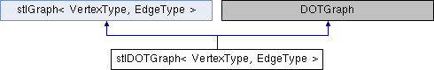

stl graph class for directed and undirected graphs More...
#include <stlDOTgraph.h>

Public Member Functions | |
| stlDOTGraph (bool d, ostream &os=cerr) | |
| init constructor More... | |
| int | insertVertex (const VertexType &e, string name) |
| override stlGraph insert functions for nodenames and subgraphs More... | |
| int | insertVertex (const VertexType &e, string name, int subgraphId, string subgraphName) |
| void | insertEdge (const VertexType &e1, const VertexType &e2, const EdgeType &Value) |
| override stlGraph insert functions for nodenames and subgraphs More... | |
| void | _writeToDOTFile (string filename) |
| write DOT graph to filename More... | |
| void | writeAdjacencyMatrixToFileRaw (string filename) |
| write the adjacency matrix to a file (only integer matrix entries, raw file format) More... | |
| void | writeAdjacencyMatrixToFileMcl (string filename) |
| write the adjacency matrix to a file (in MCL raw file format for mcxassemble) More... | |
 Public Member Functions inherited from stlGraph< VertexType, EdgeType > Public Member Functions inherited from stlGraph< VertexType, EdgeType > | |
| stlGraph (bool d, ostream &os=cerr) | |
| init constructor More... | |
| vertex & | operator[] (int i) |
| access vertex i More... | |
| int | insertVertex (const VertexType &e) |
| insert a vertex More... | |
| void | insertEdge (const VertexType &e1, const VertexType &e2, const EdgeType &Value) |
| insert an edge between e1 and e2 More... | |
| void | connectVertices (int i, int j, const EdgeType &Value) |
| add an edge between e1 and e2 More... | |
| void | check (ostream &=cout) |
| output graph information More... | |
| size_t | countEdges () |
| determine number of edges More... | |
| void | cyclesAndConnectivity () |
| determine connectivity and cycles More... | |
| size_t | size () const |
| size of the vertex vector More... | |
| iterator | begin () |
| begin iterator More... | |
| iterator | end () |
| end iterator More... | |
| bool | isDirected () const |
| is it a directed graph? More... | |
| int | getConnectivity () const |
| returns number the connectivity of the graph More... | |
| int | getCycles () const |
| returns number of cycles (-1 if unknown) More... | |
| int | getComponents () const |
| returns number of components (-1 if unknown) More... | |
Protected Attributes | |
| DOTSubgraphRepresentation< vertex *> | mDot |
| DOT representation class. More... | |
| map< int, string > | mNodeNames |
| store names for the nodes (based on graph vector index) More... | |
| map< int, string > | mSubgraphNames |
| store subgraph names More... | |
| map< int, int > | mNodeSubgraphs |
| store subgraph ids (also based on index) More... | |
| Protected Attributes inherited from stlGraph< VertexType, EdgeType > | |
| bool | directed |
| directed graph? More... | |
| GraphType | C |
| graph container More... | |
| ostream * | pOut |
| debug output More... | |
| ConnectivityType | connectivity |
| connectivity of the graph (determined by cyclesAndConnectivity) More... | |
| int | cycles |
| no. of cycles (determined by cyclesAndConnectivity) More... | |
| int | components |
| no. of components (determined by cyclesAndConnectivity) More... | |
Private Member Functions | |
| virtual DOTVertexIterator | getVertices () |
| get an iterator for the vertices More... | |
| virtual DOTVertexIterator | getVerticesEnd () |
| get the end of the vertices More... | |
| virtual DOTEdgeIterator | getEdges (DOTVertexType &v) |
| get an iterator for all edges of a vertex More... | |
| virtual DOTEdgeIterator | getEdgesEnd (DOTVertexType &v) |
| get the end of the edges More... | |
| virtual string | getVertexName (DOTVertexType &v) |
| get the name of a vertex More... | |
| virtual DOTVertexType * | getTargetVertex (DOTEdgeType &e) |
| get the target vertex of an edge, NOTE - this function returns a pointer to a vertex for use with vertexToString! More... | |
| virtual string | getEdgeLabel (DOTEdgeType &e) |
| get the label of an edge More... | |
| virtual string | vertexToString (DOTVertexType *v) |
| get unique string representation of a vertex, NOTE - this function works with a pointer to the vertex! More... | |
| virtual int | getVertexSubgraphId (DOTVertexType &v) |
| query the subgraph ID of a node More... | |
| virtual map< int, string > | getSubgraphList () |
| get a list of the subgraph names, together with their ID's (see also getVertexSubgraphId) More... | |
Additional Inherited Members | |
| Public Types inherited from stlGraph< VertexType, EdgeType > | |
| enum | ConnectivityType { unknown, weak, strong } |
| enum | vertexStatus { notVisited, visited, processed } |
| typedef map< int, EdgeType > | Successor |
| public type interface More... | |
| typedef pair< VertexType, Successor > | vertex |
| typedef vector< vertex > | GraphType |
| typedef GraphType::iterator | iterator |
| typedef GraphType::const_iterator | const_iterator |
Detailed Description
template<class VertexType, class EdgeType>
class stlDOTGraph< VertexType, EdgeType >
stl graph class for directed and undirected graphs
Definition at line 29 of file stlDOTgraph.h.
Constructor & Destructor Documentation
◆ stlDOTGraph()
|
inline |
init constructor
Definition at line 37 of file stlDOTgraph.h.
Member Function Documentation
◆ _writeToDOTFile()
| void stlDOTGraph< VertexType, EdgeType >::_writeToDOTFile | ( | string | filename | ) |
write DOT graph to filename
Definition at line 160 of file stlDOTgraph.h.
◆ getEdgeLabel()
|
inlineprivatevirtual |
get the label of an edge
Definition at line 100 of file stlDOTgraph.h.
◆ getEdges()
|
inlineprivatevirtual |
get an iterator for all edges of a vertex
Definition at line 83 of file stlDOTgraph.h.
◆ getEdgesEnd()
|
inlineprivatevirtual |
get the end of the edges
Definition at line 86 of file stlDOTgraph.h.
◆ getSubgraphList()
|
inlineprivatevirtual |
get a list of the subgraph names, together with their ID's (see also getVertexSubgraphId)
Definition at line 122 of file stlDOTgraph.h.
References stlDOTGraph< VertexType, EdgeType >::mSubgraphNames.
◆ getTargetVertex()
|
inlineprivatevirtual |
get the target vertex of an edge, NOTE - this function returns a pointer to a vertex for use with vertexToString!
Definition at line 97 of file stlDOTgraph.h.
References stlGraph< VertexType, EdgeType >::C.
◆ getVertexName()
|
inlineprivatevirtual |
get the name of a vertex
Definition at line 89 of file stlDOTgraph.h.
References stlGraph< VertexType, EdgeType >::C, annotation::index, stlDOTGraph< VertexType, EdgeType >::mNodeNames, and stlGraph< VertexType, EdgeType >::size().
◆ getVertexSubgraphId()
|
inlineprivatevirtual |
query the subgraph ID of a node
Definition at line 114 of file stlDOTgraph.h.
References stlGraph< VertexType, EdgeType >::C, annotation::index, stlDOTGraph< VertexType, EdgeType >::mNodeSubgraphs, and stlGraph< VertexType, EdgeType >::size().
◆ getVertices()
|
inlineprivatevirtual |
get an iterator for the vertices
Definition at line 77 of file stlDOTgraph.h.
References stlGraph< VertexType, EdgeType >::begin().
◆ getVerticesEnd()
|
inlineprivatevirtual |
get the end of the vertices
Definition at line 80 of file stlDOTgraph.h.
References stlGraph< VertexType, EdgeType >::end().
◆ insertEdge()
| void stlDOTGraph< VertexType, EdgeType >::insertEdge | ( | const VertexType & | e1, |
| const VertexType & | e2, | ||
| const EdgeType & | Value | ||
| ) |
override stlGraph insert functions for nodenames and subgraphs
Definition at line 150 of file stlDOTgraph.h.
References stlGraph< VertexType, EdgeType >::insertEdge().
◆ insertVertex() [1/2]
| int stlDOTGraph< VertexType, EdgeType >::insertVertex | ( | const VertexType & | e, |
| string | name | ||
| ) |
override stlGraph insert functions for nodenames and subgraphs
Definition at line 130 of file stlDOTgraph.h.
References id, stlGraph< VertexType, EdgeType >::insertVertex(), and name.
◆ insertVertex() [2/2]
| int stlDOTGraph< VertexType, EdgeType >::insertVertex | ( | const VertexType & | e, |
| string | name, | ||
| int | subgraphId, | ||
| string | subgraphName | ||
| ) |
Definition at line 136 of file stlDOTgraph.h.
References id, stlGraph< VertexType, EdgeType >::insertVertex(), and name.
◆ vertexToString()
|
inlineprivatevirtual |
get unique string representation of a vertex, NOTE - this function works with a pointer to the vertex!
Definition at line 105 of file stlDOTgraph.h.
◆ writeAdjacencyMatrixToFileMcl()
| void stlDOTGraph< VertexType, EdgeType >::writeAdjacencyMatrixToFileMcl | ( | string | filename | ) |
write the adjacency matrix to a file (in MCL raw file format for mcxassemble)
Definition at line 259 of file stlDOTgraph.h.
References boost::edges().
◆ writeAdjacencyMatrixToFileRaw()
| void stlDOTGraph< VertexType, EdgeType >::writeAdjacencyMatrixToFileRaw | ( | string | filename | ) |
write the adjacency matrix to a file (only integer matrix entries, raw file format)
Definition at line 228 of file stlDOTgraph.h.
References boost::edges().
Member Data Documentation
◆ mDot
|
protected |
DOT representation class.
Definition at line 60 of file stlDOTgraph.h.
◆ mNodeNames
|
protected |
store names for the nodes (based on graph vector index)
Definition at line 63 of file stlDOTgraph.h.
Referenced by stlDOTGraph< VertexType, EdgeType >::getVertexName().
◆ mNodeSubgraphs
|
protected |
store subgraph ids (also based on index)
Definition at line 69 of file stlDOTgraph.h.
Referenced by stlDOTGraph< VertexType, EdgeType >::getVertexSubgraphId().
◆ mSubgraphNames
|
protected |
store subgraph names
Definition at line 66 of file stlDOTgraph.h.
Referenced by stlDOTGraph< VertexType, EdgeType >::getSubgraphList().
The documentation for this class was generated from the following file:
- /home/liao6/workspace/rose-github/src/roseIndependentSupport/graphics/stlDOTgraph.h